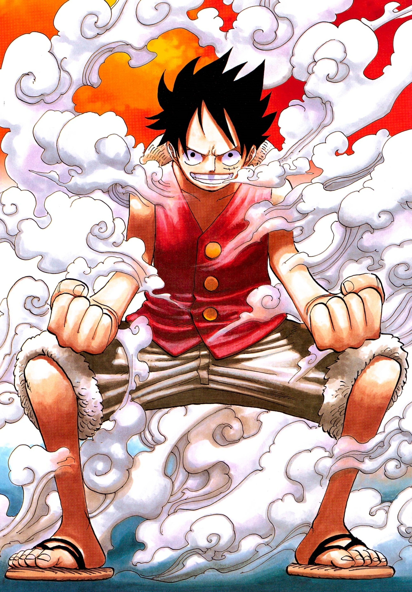

Teoria
Teoria: Luffy vai destruir a Red Line?
Essa é uma das teorias mais famosas de One Piece.
Muitos fãs acreditam que Luffy vai destruir a Red Line para unir todos os mares e criar o All Blue.
Isso também poderia realizar o sonho do Sanji e combinar com o jeito livre do Luffy de enxergar o mundo.
⬅ Voltar